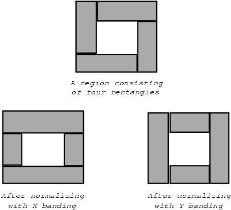
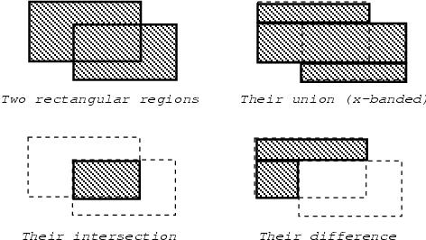
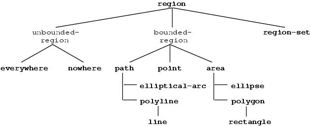
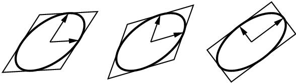

3 Regions
CLIM provides definitions for a variety of geometric objects, including points,
lines, elliptical arcs, regions, and transformations. Both the graphics and
windowing modules use the same set of geometric objects and functions. In this
section, we describe regions, points, and the basic region classes.
Transformations will be described in Chapter Affine Transformations .
Most of these objects are described as if they are implemented using standard
classes. However, this need not be the case. In particular, they may be
implemented using structure classes, and some classes may exist only to name a
place in the hierarchy---all members of such a class will be instances of that
class's subclasses. The most important concern is that these classes must allow
specializing generic functions.
The coordinate system in which the geometric objects reside is an abstract,
continuous coordinate system. This abstract coordinate system is converted into
``real world'' coordinates only during operations such as rendering one of the
objects on a display device.
Angles are measured in radians. Following standard conventions, when an angle
is measured relative to a given line, a positive angle indicates an angle
counter-clockwise from the line in the plane. When the angle from the positive
x axis to the positive y axis is positive (that is, the positive y axis is
counter-clockwise from the positive x axis), the coordinate system is said to
be right-handed . When this angle is negative, the coordinate system
is said to be left-handed . Thus, the cartesian coordinate system with
x increasing to the right and y increasing upward is right-handed. A
coordinate system with y increasing down is left-handed. (By default, CLIM
streams are left handed, but no such default exists for sheets in general.)
3.1 General Regions
A region is an object that denotes a set of mathematical points in the
plane. Regions include their boundaries, that is, they are closed. Regions
have infinite resolution.
A bounded region is a region that contains at least one point and for
which there exists a number, d, called the region's diameter, such that if
p1 and p2 are points in the region, the distance between p1 and p2 is
always less than or equal to d.
An unbounded region either contains no points or contains points
arbitrarily far apart.
Another way to describe a region is that it maps every (x,y) pair into either
true or false (meaning member or not a member, respectively, of
the region). Later, in Chapter General Designs , we will generalize a region to
something called a design that maps every point (x,y) into color and
opacity values.
The protocol class that corresponds to a set of points. This includes both
bounded and unbounded regions. This is a subclass of design (see
Chapter Drawing in Color ).
If you want to create a new class that behaves like a region, it should be a subclass of region. Subclasses of region must obey the region protocol.There is no general constructor called make-region because of the
impossibility of a uniform way to specify the arguments to such a function.
Returns true if object is a region , otherwise returns
false .
The protocol class path denotes bounded regions that have
dimensionality 1 (that is, have length). It is a subclass of
region and bounding-rectangle .
If you want to create a new class that behaves like a path, it should be a subclass of path. Subclasses of path must obey the path protocol.Constructing a path object with no length (via make-line* , for
example) may canonicalize it to +nowhere+ .
Some rendering models support the constructing of areas by filling a closed
path. In this case, the path needs a direction associated with it. Since CLIM
does not currently support the path-filling model, paths are directionless.
Returns true if object is a path , otherwise returns
false .
Note that constructing a path object with no length (such as calling
make-line with two coincident points), for example) may canonicalize it to
+nowhere+ .
The protocol class area denotes bounded regions that have dimensionality 2
(that is, have area). It is a subclass of region and bounding-rectangle .
If you want to create a new class that behaves like an area, it should be a subclass of area. Subclasses of area must obey the area protocol.Note that constructing an area object with no area (such as calling
make-rectangle with two coincident points), for example) may canonicalize
it to +nowhere+ .
Returns true if object is an area , otherwise returns
false .
The type that represents a coordinate. This must either be t , or a
subtype of real . CLIM implementations may use a more specific subtype of
real , such as single-float , for reasons of efficiency.
All of the specific region classes and subclasses of bounding-rectangle will use this type to store their coordinates. However, the constructor
functions for the region classes and for bounding rectangles must accept numbers
of any type and coerce them to coordinate .
Coerces the number n to be a coordinate.
+everywhere+ is the region that includes all the points on the
two-dimensional infinite drawing plane. +nowhere+ is the empty region, the
opposite of +everywhere+ .
3.1.1 The Region Predicate Protocol
The following generic functions comprise the region predicate protocol. All
classes that are subclasses of region must either inherit or implement
methods for these generic functions.
The methods for region-equal , region-contains-region-p , and
region-intersects-region-p will typically specialize both the region1 and region2 arguments.
| region-equal | region1 region2 | [Generic function] |
Returns true if the two regions region1 and region2 contain exactly the same set of points, otherwise returns false .
| region-contains-region-p | region1 region2 | [Generic function] |
Returns true if all points in the region region2 are members
of the region region1 , otherwise returns false .
| region-contains-position-p | region x y | [Generic function] |
Returns true if the point at (x,y) is contained in the region region , otherwise returns false . Since regions in CLIM are closed,
this must return true if the point at (x,y) is on the region's
boundary. CLIM implementations are permitted to return different non-nil values depending on whether the point is completely inside the region or is on
the border.
region-contains-position-p is a special case of region-contains-region-p in which the region is the point (x,y).
| region-intersects-region-p | region1 region2 | [Generic function] |
Returns false if region-intersection of the two regions region1 and region2 would be +nowhere+ , otherwise returns
true .
3.1.2 Region Composition Protocol
Region composition is not always equivalent to simple set operations. Instead,
composition attempts to return an object that has the same dimensionality as one
of its arguments. If this is not possible, then the result is defined to be an
empty region, which is canonicalized to +nowhere+ . (The exact details of
this are specified with each function.)
Sometimes, composition of regions can produce a result that is not a simple
contiguous region. For example, region-union of two rectangular regions
might not be a single rectangle. In order to support cases like this, CLIM has
the concept of a region set , which is an object that represents one or
more region objects related by some region operation, usually a union.
CLIM provides standard classes to cover the cases of region union, intersection,
and difference.
Some CLIM implementations might only implement a subset of full region
composition. Because of the importance of rectangular regions and region sets
that are the union of rectangular regions, every CLIM implementation is required
to fully support all functions that use regions for those cases. (For example,
CLIM implementations must be able do clipping and repainting on region sets
composed entirely of axis-aligned rectangles.) If a CLIM implementation does
not support some functions on non-rectangular region sets (for example,
clipping), it must signal an error when an unsupported case is encountered;
the exact details of this depend on the particular CLIM implementation.
| region-set | [Protocol Class] |
The protocol class that represents a region set; a subclass of region and
bounding-rectangle .
In addition to the three classes below, there may be other instantiable
subclasses of region-set that represent special cases, for instance, some
implementations might have a standard-rectangle-set class that represents
the union of several axis-aligned rectangles.
Members of this class are immutable.
| region-set-p | object | [Predicate] |
Returns true if object is a region set , otherwise returns
false .
| standard-region-union | [Class] |
| standard-region-intersection | [Class] |
| standard-region-difference | [Class] |
These three instantiable classes respectively implement the union, intersection,
and differences of regions. Implementations may, but are not required to, take
advantage of the commutativity and associativity of union and intersection in
order to ``collapse'' complicated region sets into simpler ones.
Region sets that are composed entirely of axis-aligned rectangles must be
canonicalized into either a single rectangle or a union of rectangles.
Furthermore, the rectangles in the union must not overlap each other.
The following generic functions comprise the region composition protocol. All
classes that are subclasses of region must implement methods for these
generic functions.
The methods for region-union , region-intersection , and
region-difference will typically specialize both the region1 and
region2 arguments.
| region-set-regions | region &key normalize | [Generic function] |
Returns a sequence of the regions in the region set region .
region can be either a region set or a ``simple'' region, in which
case the result is simply a sequence of one element: region .
This function returns objects that reveal CLIM's internal state; do not modify those objects. For the case of region sets that are unions of axis-aligned rectangles, the
rectangles returned by region-set-regions are guaranteed not to overlap.
If normalize is supplied, it must be either :x-banding or
:y-banding . If it is :x-banding and all the regions in region are axis-aligned rectangles, the result is normalized by merging adjacent
rectangles with banding done in the x direction. If it is :y-banding and
all the regions in region are rectangles, the result is normalized with
banding done in the y direction. Normalizing a region set that is not
composed entirely of axis-aligned rectangles using x- or y-banding causes CLIM
to signal the region-set-not-rectangular error.
| map-over-region-set-regions | function region &key normalize | [Generic function] |
Calls function on each region in the region set region . This
is often more efficient than calling region-set-regions . function is
a function of one argument, a region; it has dynamic extent. region can
be either a region set or a ``simple'' region, in which case
function is called once on region itself. normalize is as for
region-set-regions .

Figure 3.1: Normalization of rectangular region sets.
| region-union | region1 region2 | [Generic function] |
Returns a region that contains all points that are in either of the
regions region1 or region2 (possibly with some points removed
in order to satisfy the dimensionality rule). The result of region-union always has dimensionality that is the maximum dimensionality of region1 and region2 . For example, the union of a path and an area produces an
area; the union of two paths is a path.
region-union will return either a simple region, a region set, or a member
of the class standard-region-union .
This function is permitted to capture its mutable inputs; the
consequences of modifying those objects are unspecified.
| region-intersection | region1 region2 | [Generic function] |
Returns a region that contains all points that are in both of the regions region1 and region2 (possibly with some points removed in order to
satisfy the dimensionality rule). The result of region-intersection has
dimensionality that is the minimum dimensionality of region1 and
region2 , or is +nowhere+ . For example, the intersection of two areas
is either another area or +nowhere+ ; the intersection of two paths is
either another path or +nowhere+ ; the intersection of a path and an area
produces the path clipped to stay inside of the area.
region-intersection will return either a simple region or a member of the
class standard-region-intersection .
This function is permitted to capture its mutable inputs; the
consequences of modifying those objects are unspecified.
| region-difference | region1 region2 | [Generic function] |
Returns a region that contains all points in the region region1 that are not in the region region2 (possibly plus additional
boundary points to make the result closed). The result of
region-difference has the same dimensionality as region1 , or is
+nowhere+ . For example, the difference of an area and a path produces the
same area; the difference of a path and an area produces the path clipped to
stay outside of the area.
region-difference will return either a simple region, a region set, or a
member of the class standard-region-difference .
This function is permitted to capture its mutable inputs; the
consequences of modifying those objects are unspecified.

Figure 3.2: Examples of region union, intersection, and difference.
3.2 Other Region Types
The other types of regions are points, polylines, polygons, elliptical arcs, and
ellipses. All of these region types are closed under affine transformations.
Issue: SWM, York
There is a proposal to remove the polygon ,
polyline , line , ellipse , and elliptical-arc classes, since
they are only of limited utility, and CLIM itself doesn't use the classes at
all. The advantage of removing these classes is that both the spec and CLIM
itself become a little simpler, and there are fewer cases of the region protocol
to implement. However, removing these classes results in a geometric model that
is no longer closed (in the mathematical sense). This lack of closure makes it
difficult to specify the design-based drawing model. Furthermore, these are
intuitive objects that are used by a small, but important, class of
applications, and some people feel that CLIM should relieve programmers from
having to implement these classes for himself or herself.
The advocates of of removing these classes also propose removing the
design-based drawing model. In this case, a more consistent proposal is to
remove all of the geometric classes, including point and rectangle .
Again, the opposing point of view believes that the power and flexibility of the
design-based drawing model does not justify the removal of any of these classes.
One counter-proposal is to require CLIM not to use any of the extended region
classes internally, and to move the implementation of the extended region
classes to a separately loadable module (via provide and require ).

Figure 3.3: The class structure for all regions.
3.2.1 Points
A point is a mathematical point in the plane, designated by its
coordinates, which are a pair of real numbers (where a real number is defined as
either an integer, a ratio, or a floating point number). Points have neither
area nor length (that is, they have dimensionality 0).
Note well that a point is not a pixel; CLIM models a drawing plane with
continuous coordinates. This is discussed in more detail in
Chapter Graphics .
The protocol class that corresponds to a mathematical point. This is a subclass
of region and bounding-rectangle .
If you want to create a new class that behaves like a point, it should be a subclass of point. Subclasses of point must obey the point protocol.Returns true if object is a point , otherwise returns
false .
An instantiable class that implements a point. This is a subclass of point .
This is the class that make-point instantiates.
Members of this class are immutable. Returns an object of class standard-point whose coordinates are x and
y . x and y must be real numbers.
3.2.1.1 The Point Protocol
The following generic functions comprise the point API. Only
point-position is in the point protocol, that is, all classes that are
subclasses of point must implement methods for point-position , but
need not implement methods for point-x and point-y .
| point-position | point | [Generic function] |
Returns both the x and y coordinates of the point point as two values.
| point-x | point | [Generic function] |
| point-y | point | [Generic function] |
Returns the x or y coordinate of the point point , respectively.
CLIM will supply default methods for point-x and point-y on the
protocol class point that are implemented by calling point-position .
3.2.2 Polygons and Polylines
A polyline is a path that consists of one or more line segments joined
consecutively at their end-points.
Polylines that have the end-point of their last line segment coincident with the
start-point of their first line segment are called closed ; this use of
the term ``closed'' should not be confused with closed sets of points.
A polygon is an area bounded by a closed polyline.
If the boundary of a polygon intersects itself, the odd-even winding-rule
defines the polygon: a point is inside the polygon if a ray from the point to
infinity crosses the boundary an odd number of times.
The protocol class that corresponds to a polyline. This is a subclass of
path .
If you want to create a new class that behaves like a polyline, it should be a subclass of polyline. Subclasses of polyline must obey the polyline protocol.| polylinep | object | [Predicate] |
Returns true if object is a polyline , otherwise returns
false .
An instantiable class that implements a polyline. This is a subclass of
polyline . This is the class that make-polyline and
make-polyline* instantiate.
Members of this class are immutable. | make-polyline | point-seq &key closed | [Function] |
| make-polyline* | coord-seq &key closed | [Function] |
Returns an object of class standard-polyline consisting of the segments
connecting each of the points in point-seq (or the points represented by
the coordinate pairs in coord-seq ). point-seq is a sequence of
points ; coord-seq is a sequence of coordinate pairs, which are real
numbers. It is an error if coord-seq does not contain an even number of
elements.
If closed is true , then the segment connecting the first point and
the last point is included in the polyline. The default for closed is
false .
This function is permitted to capture its mutable inputs; the
consequences of modifying those objects are unspecified.
The protocol class that corresponds to a mathematical polygon. This is a
subclass of area .
If you want to create a new class that behaves like a polygon, it should be a subclass of polygon. Subclasses of polygon must obey the polygon protocol.| polygonp | object | [Predicate] |
Returns true if object is a polygon , otherwise returns
false .
An instantiable class that implements a polygon. This is a subclass of
polygon . This is the class that make-polygon and make-polygon* instantiate.
Members of this class are immutable. | make-polygon | point-seq | [Function] |
| make-polygon* | coord-seq | [Function] |
Returns an object of class standard-polygon consisting of the area
contained in the boundary that is specified by the segments connecting each of
the points in point-seq (or the points represented by the coordinate pairs
in coord-seq ). point-seq is a sequence of points ;
coord-seq is a sequence of coordinate pairs, which are real numbers. It
is an error if coord-seq does not contain an even number of elements.
This function is permitted to capture its mutable inputs; the
consequences of modifying those objects are unspecified. 3.2.2.1 The Polygon and Polyline Protocol
The following generic functions comprise the polygon and polyline protocol. All
classes that are subclasses of either polygon or polyline must
implement methods for these generic functions. Some of the functions below take
an argument named polygon-or-polyline ; this argument may be either a
polygon or a polyline .
| polygon-points | polygon-or-polyline | [Generic function] |
Returns a sequence of points that specify the segments in polygon-or-polyline .
This function returns objects that reveal CLIM's internal state; do not modify those objects. | map-over-polygon-coordinates | function polygon-or-polyline | [Generic function] |
Applies function to all of the coordinates of the vertices of
polygon-or-polyline . function is a function of two arguments, the
x and y coordinates of the vertex; it has dynamic extent.
| map-over-polygon-segments | function polygon-or-polyline | [Generic function] |
Applies function to the segments that compose polygon-or-polyline .
function is a function of four arguments, the x and y coordinates of
the start of the segment, and the x and y coordinates of the end of the
segment; it has dynamic extent. When map-over-polygon-segments is called
on a closed polyline, it will call function on the segment that connects
the last point back to the first point.
| polyline-closed | polyline | [Generic function] |
Returns true if the polyline polyline is closed, otherwise returns
false . This function need be implemented only for polylines , not
for polygons .
3.2.3 Lines
A line is a polyline consisting of a single segment.
The protocol class that corresponds to a mathematical line segment, that is, a
polyline with only a single segment. This is a subclass of polyline .
If you want to create a new class that behaves like a line, it should be a subclass of line. Subclasses of line must obey the line protocol.Returns true if object is a line , otherwise returns
false .
An instantiable class that implements a line segment. This is a subclass of
line . This is the class that make-line and make-line* instantiate.
Members of this class are immutable. | make-line | start-point end-point | [Function] |
| make-line* | start-x start-y end-x end-y | [Function] |
Returns an object of class standard-line that connects the two
points start-point and end-point (or the positions
(start-x ,start-y ) and (end-x ,end-y )).
This function is permitted to capture its mutable inputs; the
consequences of modifying those objects are unspecified. 3.2.3.1 The Line Protocol
The following generic functions comprise the line API. Only
line-start-point* and line-end-point* are in the line protocol, that
is, all classes that are subclasses of line must implement methods for
line-start-point* and line-end-point* , but need not implement methods
for line-start-point and line-end-point .
| line-start-point* | line | [Generic function] |
| line-end-point* | line | [Generic function] |
Returns the starting or ending point, respectively, of the line line as two real numbers representing the coordinates of the point.
| line-start-point | line | [Generic function] |
| line-end-point | line | [Generic function] |
Returns the starting or ending point of the line line ,
respectively.
CLIM will supply default methods for line-start-point and
line-end-point on the protocol class line that are implemented by
calling line-start-point* and line-end-point* .
3.2.4 Rectangles
Rectangles whose edges are parallel to the coordinate axes are a special case of
polygon that can be specified completely by four real numbers
(x1 ,y1 ,x2 ,y2 ). They are not closed under general
affine transformations (although they are closed under rectilinear
transformations).
| rectangle | [Protocol Class] |
The protocol class that corresponds to a mathematical rectangle, that is,
rectangular polygons whose sides are parallel to the coordinate axes. This is a
subclass of polygon .
If you want to create a new class that behaves like a rectangle, it should be a subclass of rectangle. Subclasses of rectangle must obey the rectangle protocol.| rectanglep | object | [Predicate] |
Returns true if object is a rectangle , otherwise returns
false .
| standard-rectangle | [Class] |
An instantiable class that implements an axis-aligned rectangle. This is a
subclass of rectangle . This is the class that make-rectangle and
make-rectangle* instantiate.
Members of this class are immutable. | make-rectangle | point1 point2 | [Function] |
| make-rectangle* | x1 y1 x2 y2 | [Function] |
Returns an object of class standard-rectangle whose edges are parallel to
the coordinate axes. One corner is at the point point1 (or the
position (x1 ,y1 )) and the opposite corner is at the point point2 (or the position (x2 ,y2 )). There are no ordering
constraints among point1 and point2 (or x1 and x2 , and
y1 and y2 ).
Most CLIM implementations will choose to represent rectangles in the most
efficient way, such as by storing the coordinates of two opposing corners of the
rectangle. Because this representation is not sufficient to represent the
result of arbitrary transformations of arbitrary rectangles, CLIM is allowed to
return a polygon as the result of such a transformation. (The most general
class of transformations that is guaranteed to always turn a rectangle into
another rectangle is the class of transformations that satisfy
rectilinear-transformation-p .)
This function is permitted to capture its mutable inputs; the
consequences of modifying those objects are unspecified. 3.2.4.1 The Rectangle Protocol
The following generic functions comprise the rectangle API. Only
rectangle-edges* is in the rectangle protocol, that is, all classes that
are subclasses of rectangle must implement methods for
rectangle-edges* , but need not implement methods for the remaining
functions.
| rectangle-edges* | rectangle | [Generic function] |
Returns the coordinates of the minimum x and y and maximum x and y of
the rectangle rectangle as four values, min-x , min-y ,
max-x , and max-y .
| rectangle-min-point | rectangle | [Generic function] |
| rectangle-max-point | rectangle | [Generic function] |
Returns the min point and max point of the rectangle rectangle ,
respectively. The position of a rectangle is specified by its min point.
CLIM will supply default methods for rectangle-min-point and
rectangle-max-point on the protocol class rectangle that are
implemented by calling rectangle-edges* .
| rectangle-min-x | rectangle | [Generic function] |
| rectangle-min-y | rectangle | [Generic function] |
| rectangle-max-x | rectangle | [Generic function] |
| rectangle-max-y | rectangle | [Generic function] |
Returns (respectively) the minimum x and y coordinate and maximum x and
y coordinate of the rectangle rectangle .
CLIM will supply default methods for these four generic functions on the
protocol class rectangle that are implemented by calling
rectangle-edges* .
| rectangle-width | rectangle | [Generic function] |
| rectangle-height | rectangle | [Generic function] |
| rectangle-size | rectangle | [Generic function] |
rectangle-width returns the width of the rectangle rectangle ,
which is the difference between the maximum x and its minimum x.
rectangle-height returns the height, which is the difference between the
maximum y and its minimum y. rectangle-size returns two values, the
width and the height.
CLIM will supply default methods for these four generic functions on the
protocol class rectangle that are implemented by calling
rectangle-edges* .
3.2.5 Ellipses and Elliptical Arcs
An ellipse is an area that is the outline and interior of an ellipse.
Circles are special cases of ellipses.
An elliptical arc is a path consisting of all or a portion of the
outline of an ellipse. Circular arcs are special cases of elliptical arcs.
An ellipse is specified in a manner that is easy to transform, and treats all
ellipses on an equal basis. An ellipse is specified by its center point and two
vectors that describe a bounding parallelogram of the ellipse. The bounding
parallelogram is made by adding and subtracting the vectors from the the center
point in the following manner:
| | |
| | |
| | | | | | x coordinate | | y coordinate | | |
| | |
| | |
| | | Center of Ellipse | | | xc | | yc | | |
| | |
| | |
| | | Vectors | | | dx1 | | dy1 | | |
| | | | | | dx2 | | dy2 | | |
| | |
| | |
| | | Corners of Parallelogram | | | xc + dx1 + dx2 | | yc + dy1 + dy2 | | |
| | | | | | xc + dx1 - dx2 | | yc + dy1 - dy2 | | |
| | | | | | xc - dx1 - dx2 | | yc - dy1 - dy2 | | |
| | | | | | xc - dx1 + dx2 | | yc - dy1 + dy2 | | |
| | |
| | |
|
Note that several different parallelograms specify the same ellipse. One
parallelogram is bound to be a rectangle---the vectors will be perpendicular
and correspond to the semi-axes of the ellipse.

Figure 3.4: Different vectors may specify the same ellipse.
The special case of an ellipse with its axes aligned with the coordinate axes
can be obtained by setting dx2 = dy1 = 0 or dx1 = dy2 = 0.
The protocol class that corresponds to a mathematical ellipse. This is a
subclass of area .
If you want to create a new class that behaves like an ellipse, it should be a subclass of ellipse. Subclasses of ellipse must obey the ellipse protocol.| ellipsep | object | [Predicate] |
Returns true if object is an ellipse , otherwise returns
false .
An instantiable class that implements an ellipse. This is a subclass of
ellipse . This is the class that make-ellipse and make-ellipse* instantiate.
Members of this class are immutable. | make-ellipse | center-point
radius-1-dx radius-1-dy radius-2-dx radius-2-dy
&key start-angle end-angle | [Function] |
| make-ellipse* | center-x center-y
radius-1-dx radius-1-dy radius-2-dx radius-2-dy
&key start-angle end-angle | [Function] |
Returns an object of class standard-ellipse . The center of the ellipse is
at the point center-point (or the position
(center-x ,center-y )).
Two vectors, (radius-1-dx ,radius-1-dy ) and
(radius-2-dx ,radius-2-dy ) specify the bounding parallelogram of the
ellipse as explained above. All of the radii are real numbers. If the two
vectors are collinear, the ellipse is not well-defined and the
ellipse-not-well-defined error will be signalled. The special case of an
ellipse with its axes aligned with the coordinate axes can be obtained by
setting both radius-1-dy and radius-2-dx to 0.
If start-angle or end-angle are supplied, the ellipse is the ``pie
slice'' area swept out by a line from the center of the ellipse to a point on
the boundary as the boundary point moves from the angle start-angle to
end-angle . Angles are measured counter-clockwise with respect to the
positive x axis. If end-angle is supplied, the default for
start-angle is 0; if start-angle is supplied, the default for
end-angle is 2pi ; if neither is supplied then the region is a full
ellipse and the angles are meaningless.
This function is permitted to capture its mutable inputs; the
consequences of modifying those objects are unspecified.
| elliptical-arc | [Protocol Class] |
The protocol class that corresponds to a mathematical elliptical arc. This is a
subclass of path .
If you want to create a new class that behaves like an elliptical arc, it should be a subclass of elliptical-arc. Subclasses of elliptical-arc must obey the elliptical arc protocol.| elliptical-arc-p | object | [Predicate] |
Returns true if object is an elliptical arc , otherwise
returns false .
| standard-elliptical-arc | [Class] |
An instantiable class that implements an elliptical arc. This is a subclass of
elliptical-arc . This is the class that make-elliptical-arc and
make-elliptical-arc* instantiate.
Members of this class are immutable. | make-elliptical-arc | center-point
radius-1-dx radius-1-dy radius-2-dx radius-2-dy
&key start-angle end-angle | [Function] |
| make-elliptical-arc* | center-x center-y
radius-1-dx radius-1-dy radius-2-dx radius-2-dy
&key start-angle end-angle | [Function] |
Returns an object of class standard-elliptical-arc . The center of the
ellipse is at the point center-point (or the position
(center-x ,center-y )).
Two vectors, (radius-1-dx ,radius-1-dy ) and
(radius-2-dx ,radius-2-dy ), specify the bounding parallelogram of the
ellipse as explained above. All of the radii are real numbers. If the two
vectors are collinear, the ellipse is not well-defined and the
ellipse-not-well-defined error will be signalled. The special case of
an elliptical arc with its axes aligned with the coordinate axes can be obtained
by setting both radius-1-dy and radius-2-dx to 0.
If start-angle and start-angle are supplied, the arc is swept from
start-angle to end-angle . Angles are measured counter-clockwise
with respect to the positive x axis. If end-angle is supplied, the
default for start-angle is 0; if start-angle is supplied, the
default for end-angle is 2pi ; if neither is supplied then the region is
a closed elliptical path and the angles are meaningless.
This function is permitted to capture its mutable inputs; the
consequences of modifying those objects are unspecified. 3.2.5.1 The Ellipse and Elliptical Arc Protocol
The following functions apply to both ellipses and elliptical arcs. In all
cases, the name elliptical-object means that the argument may be an
ellipse or an elliptical arc . These generic functions comprise
the ellipse protocol. All classes that are subclasses of either ellipse or
elliptical-arc must implement methods for these functions.
| ellipse-center-point* | elliptical-object | [Generic function] |
Returns the center point of elliptical-object as two values representing
the coordinate pair.
| ellipse-center-point | elliptical-object | [Generic function] |
Returns the center point of elliptical-object .
ellipse-center-point is part of the ellipse API, but not part of the ellipse
protocol. CLIM will supply default methods for ellipse-center-point on the
protocol classes ellipse and elliptical-arc that are implemented by
calling ellipse-center-point* .
| ellipse-radii | elliptical-object | [Generic function] |
Returns four values corresponding to the two radius vectors of
elliptical-arc . These values may be canonicalized in some way, and so may
not be the same as the values passed to the constructor function.
| ellipse-start-angle | elliptical-object | [Generic function] |
Returns the start angle of elliptical-object . If elliptical-object is a full ellipse or closed path then ellipse-start-angle will return
nil ; otherwise the value will be a number greater than or equal to zero,
and less than 2pi .
| ellipse-end-angle | elliptical-object | [Generic function] |
Returns the end angle of elliptical-object . If elliptical-object is
a full ellipse or closed path then ellipse-end-angle will return nil ;
otherwise the value will be a number greater than zero, and less than or equal
to 2pi .